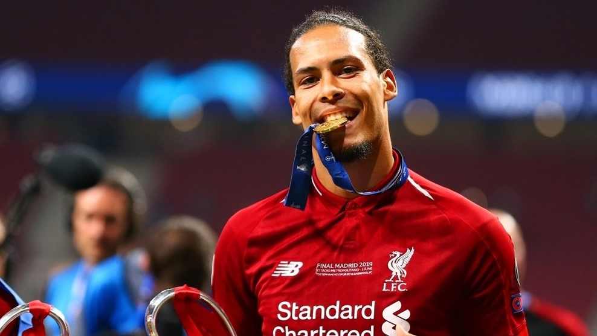

UEFA BEST PLAYER IN EUROPE
|  |
Why did Van Dijk win the vote?
Liverpool defender Virgil van Dijk has been named UEFA Men's Player of the Year for 2018/19.
The Dutch international beat off competition from three-time UEFA Men's Player of the Year Cristiano Ronaldo and two-time winner Lionel Messi. The 28-year-old centre-back received the trophy on stage in Monaco during the UEFA Champions League group stage draw.
Following Liverpool's 2018 final defeat by Real Madrid, Van Dijk had every reason for nerves ahead of the 2019 decider, but his concentration did not waver. He shut out the opposition and was named man of the match as his side edged out Tottenham Hotspur in Madrid.
Fearless since arriving from Southampton in January 2018, Van Dijk kept more clean sheets than any defender in Europe's top five leagues in 2018/19. While Liverpool fell narrowly short in the Premier League, his solid presence (and occasional goalscoring efforts) provided the platform for a sixth European Cup.
|
Van Dijk testimonials
"You could write a book about Virgil van Dijk's strengths and abilities. He is still young, but he's so mature."
Jürgen Klopp, Liverpool manager
"The 'Swagger Don'. Virgil is suave on and off the pitch. He makes everything look easy, doesn't he? When you've got him behind you, you've got that feeling of security. He's been an absolute rock all season."
Alex Oxlade-Chamberlain, Liverpool midfielder
"He embodies the full picture of a defender: his radiance, the way he captains the group, his presence on the pitch, and also now the prizes – the Champions League was fantastic. He can be an example to anyone who wants to aspire to be the best."
Ronald Koeman, Netherlands coach